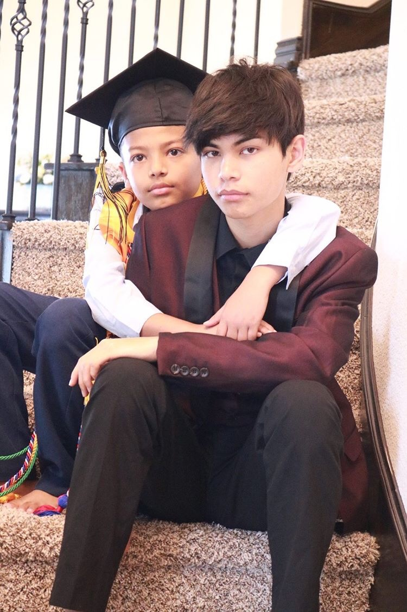

My name is Albin Shrestha and I am currently CS student at UT Austin. Thank you for visiting my website.
Albin Shrestha connects tech and project management companies with the information and resources they need in order to properly train their employees. At the University of Texas, Albin has learned how to appropriately communicate with peers and co-workers creating a productive workflow. His personal projects including his UT CS website and Unity games help distinguish him from his peers. Albin is currently pursuing a degree in Computer Science in hopes of working in business management or game design.